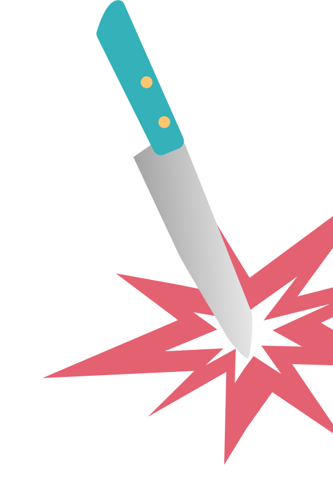
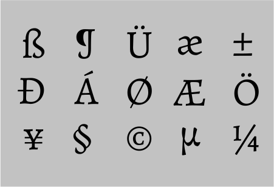

А
Углы у букв
обрезанны
а
Ассиметрия
в засечках
Train ticket
7535738
Train ticket
7535739
CONFIDENTIAL
Alegreya – старостильная антиква,
ориентированная на набор художественной
литературы. Шрифт является вариативным
и идеально подходит как для заголовков,
так и для текстов. Среди его отличительных
черт – динамичныйи разнообразный ритм,
облегчающий чтение длинных текстов.
Гарнитура содержит
10
начертаний
Поддерживает
319
языков
А
Углы у букв
обрезанны
а
Ассиметрия
в засечках
Шрифт Alegreya был создан в 2011 году аргентинским дизайнером Хуаном Пабло дел Перальом (Juan Pablo del Peral). Он разработал шрифт в рамках своего проекта по созданию качественных шрифтов для использования в печатных и цифровых медиа.
?
Очередное убийство
Regular
Medium
ExtraBold
Bold
Black
Medium Italic
Bold Italic
ExtraBold Italic
Italic
Black Italic
Печатные издания:
1. в книгах
2. в журналах
3. в газетах
4. в других печатных
материалах
Для создания заголовков,
подзаголовков и основного
текста на веб-сайтах.
Упаковка и маркетинговые
материалы.
Разыскивается преступник
The Hollow
Agata Christie
Murder on the Orient Express
Agata Christie
Death of the Nile
Agata Christie
Sad Cypress
Agata Christie
Orient Express
«Мы разрабатываем шрифты,
заботясь о мельчайших
деталях.»
Huerta Tipográfica
7535739
crime solved